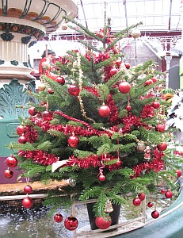

Moussieu l'Editeu,
Man Ph'lip m'a d'mandé d'vos êcrithe, car il est au liet l'pouôre homme, et n'a pas l'couothage de prendre la pliume à la main.
Sûs un sens ch'est d'sa faute, car s'il avait print m'n'avis y s'sait sûs ses pids au lieu d'être dans sa chambre env'lopé d'blankets, mais il a tat têtoigne toute sa vie et nou n'le chang'gea pas ach'teu.
Dimanche passé, dans les quatre heuthes y s'en fut dans l'êtablye et trouvit qu'yunne des g'niches avait abanonné. J'l'y dis d'la laissi, la tchéthoigne, et qu'ou r'veindrait quand ou s'sait lâssée, mais nânîn, le v'la hors r'gardé pour du temps tchi faisait. Y'avait une djâile de vent, y tchiyait d'la plyie à verse et nou n'y viyait lerme, et y n'voulit pas seulement changi ses chabots. Imaginous!
Il est vrai tch'y l'attrapit la fichue bête, mais étout il attrapit une têriblye suée d'fraid, et ne v'la trais ou quatre jours que j'sis à l'poussoté et y'en faithe de toutes les sortes. Agniet y semblye tch'y s'ravigotte un mio, mais s'y n'est pas mûs d'main, j'couôrrait jusqu'en ville ramâassé d'la méd'cine. Je n'veur pas l'vais dans san liet l'jour de Nouë damme.
Ach'teu ch'est au sujet du jour de Nouë que j'voudrais vos pâslé. Comme ou d'vez l'savé je n'sommes pas d'grandes gens, et ch't'année, sans doute, n'y'étha pas sûs la tablye tout chen qu'nou voudrait y vais. Mais je f'thons d'notre mûs, et j'vos invitons, Moussieu l'Editeu, à v'nin pâssé l'jour avec nous. Chonna nos f'thait grand pliâisi.
Aut'fais j'tiomes une d'gâinge ichin l'jour de Nouë, et j'me r'souvains d'une bordée que j'tiomes vingt-quatre à la tablye. Mais ch't'année je s'sons au tout pûs une doûzaine, car le Liaiésse et sa femme ne peuvent pas v'nin, viyant qu'les ptiots ont la rouogeule, la Liza a envié m'dithe qu'ou n'est pas trop ben et qu'ou crai qu'ou s'sa mûs siez-sé. Et oulle en a dêja neuf la pouôre garse.
Et don j'ne s'sons pas une grande compagnie, Moussieu, là j'vos promets qu'y'étha tout-plien d'nouorrituthe, et même tchique petite chose à béthe.
Je n'vos promets pas un picot, mais yun d'nos biaux-fils nos a promins un gros pithot. Ch'en est yun de ch't'année est ch'est mé tch'y s'en va l'rôti, et j'vos garantis d'la sauce de pommes, des patates rôties et du stuffing à la mode du Portinfé.
Y'étha étout un mio d'lard frais, car yun d'nos vaisins s'en va tué dans la s'maine. Notre bouochi nos a promint un gigot d'mouton, et y'a deux cochets que l'Ph'lip a engrâissi, et j'sis prête à gagi que l'pûs p'tit n'pèse pas mains d'huit livres.
Après chonna y'étha l'podin, et ch'n'est pas parsque ch'est mé, mais tout l'monde de par ichin savent que n'y'a pas une femme en Jêrri à m'prendre quant il est tchestchon d'faithe un podin d'Nouë. J'n'ai p't'être pas tout chen tch'y m'faut, mais j'en ai assez pour faithe un podin avec le goût de r'va's'y.
Pour le tais y'étha d'la gâche, et si ch'n'est pon d'la gâche à corinthe ch't'année ou comprendrez que ch'n'est pas d'ma faute. Mais ou s'sa faite avec du bouon beurre, et pas avec chutte salop'thie qu'nous accate dans les boutiques.
J'vos promets étout des merveilles. J'm'en vais m'y mettre pûs tard agniet, quand la mathée d'val'la, et j'en 'thait assez pour vos en donné une poutchie pour emporté siez vous.
Et, viyant qu'ch'est Nouë, y'e'tha étout deux p'tits d'gouts d'vin et d'litcheu pour vos rêjoui l'tchoeu. J'ai une bouteille de vin qu'j'avais muchi va, une fais tch'y s'sa r'fait, ramâssé deus-trais bouteilles de cidre et yunne de tchiquechose un mio pûs fort.
Espéthant qu'ou n'dithez pas nânîn, et qu'j'éthons l'pliaisi d'votre compagnie, je m'signe respectueusement,
Merrienne.
Morning News 14/12/1946
Viyiz étout: